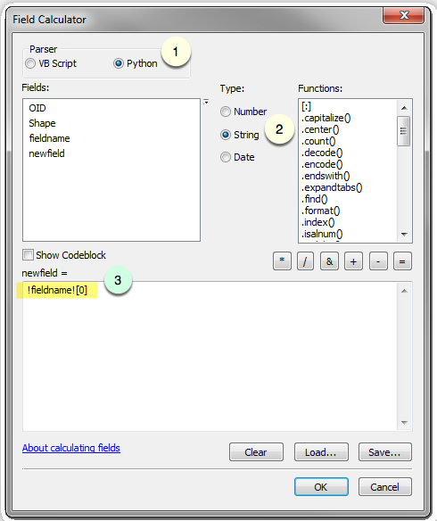

Basic Field Calculations for ArcGIS®


Get started
Tabular is an unofficial, interactive manual for the Calculate Field tool in ArcGIS Desktop. Tabular is designed for new GIS and Python users to learn scripting for spatial analysis.
You can copy-and-paste Python expressions into ArcGIS, navigate through the tool with screenshots, and test your code in Python sandboxes. Or you can download the cheat sheet.
Edit some text
Find characters
| Goal | |
|---|---|
| Return the first character |
 |
| Return the first through third characters |
|
| Return the second-to-last character |
|


Remove characters
| Goal | Code snippet |
|---|---|
| Remove all whitespace |
|
| Swap certain words |
|
| Remove all non-alphanumeric characters |
|
Return <Null> |
|


Format the string
| Goal | |
|---|---|
| Capitalize the string |
|
| Convert the string to lowercase |
|
| Convert the string to all caps |
|


Do some math
Add and subtract
| Goal | |
|---|---|
| Add 5 to the field value |
|
| Subtract 6 from the field value |
|


Multiply and divide
| Goal |
|
|---|---|
| Multiply by 2 |
|
| Divide by 3 |
|


Execute simple functions
In the Field Calculator, you can execute
| Goal | |
|---|---|
| Calculate the logarithm |
|
| Round to 2 decimal places |
|


Deal with geometries
Find feature extents
| Goal | |
|---|---|
| Find the most extreme longitude |
|
| Find the most extreme latitude |
|


Calculate line lengths
| Goal | |
|---|---|
| Calculate feature length in map units |
|
| Calculate feature length in feet |
|
| Calculate feature length in geodesic feet |
|


Compute shape areas
| Goal | |
|---|---|
| Calculate feature area in map units |
|
| Calculate feature area in square feet |
|
| Calculate feature area in geodesic square feet |
|


Further reading
You can perform more advanced calculations with the code block in the Field Calculator. Check out some examples in the official Esri documentation.
Shitij Mehta wrote a blog series on if-then-else statements that you can apply to field calculations.
David Verbyla made a video on Python functions for the Field Calculator.